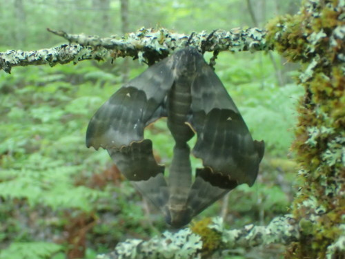

Big Poplar Sphinx
Pachysphinx modesta butterfly / moth

Large hawkmoth whose caterpillars feed on poplar and willow foliage.
3 documented plant relationships.
Pachysphinx modesta butterfly / moth

Large hawkmoth whose caterpillars feed on poplar and willow foliage.
3 documented plant relationships.
 bobkennedy, some rights reserved (CC BY-SA), uploaded by bobkennedy")
 Douglas Goldman, some rights reserved (CC BY-SA), uploaded by Douglas Goldman")